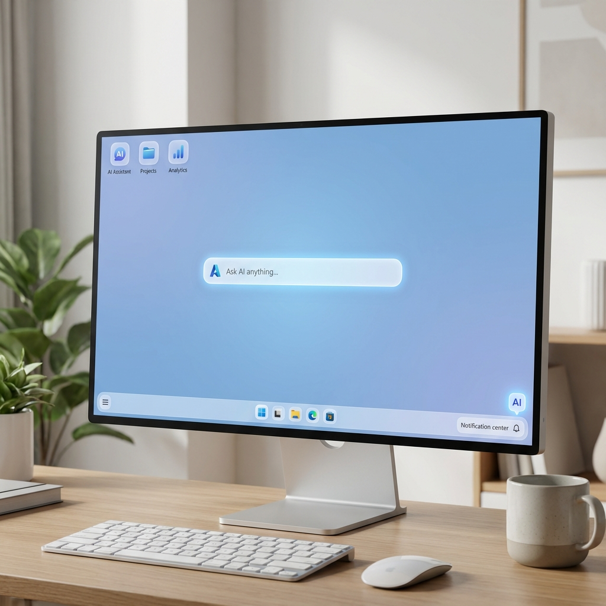

The Copilot everywhere era is officially over. Microsoft announced this week that it's scaling back what it calls "unnecessary Copilot entry points" across Windows—a polite way of admitting that perhaps slapping AI assistants into every nook and cranny of the operating system wasn't the brilliant idea they thought it was.
Pavan Davuluri, Microsoft's vice president of Windows, delivered the news with the kind of corporate finesse that almost makes you forget how aggressively the company pushed Copilot into everything from Paint to Calculator just months ago. The new philosophy? AI where it's "most meaningful, with craft and focus." Translation: we went too far, and users told us so.
The Great Unbundling Begins
The retreat starts with some of the most head-scratching Copilot integrations. Remember when Microsoft decided Snipping Tool needed an AI assistant? Gone. The Copilot button in Photos that nobody asked for? Disappearing. The AI suggestions in Notepad that turned a simple text editor into a bloated mess? Being shown the door.
Even the Widgets board—already a controversial addition to Windows—is losing its Copilot integration. It's as if Microsoft looked at the telemetry data, saw that actual humans weren't using these features, and finally had a moment of clarity.
The Oversaturation Backlash

This isn't happening in a vacuum. Recent surveys have painted a stark picture of public sentiment toward AI: significant mistrust, fatigue with constant AI prompts, and a growing desire for software that just works without trying to be clever. Microsoft's Copilot saturation strategy was beginning to look like a case study in how not to deploy AI.
The data suggests users felt bombarded rather than assisted. Every application launching with a "How can I help you?" popup. Every menu cluttered with AI options that added friction rather than removing it. Every simple task complicated by the assumption that users wanted an AI companion for everything they did.
What "Meaningful" AI Integration Looks Like
Davuluri's statement about "craft and focus" hints at a more thoughtful approach. The question is: what does meaningful AI integration actually mean for Windows? Based on Microsoft's hints, the answer seems to be context-aware assistance that appears when genuinely useful and stays out of the way when not.
The company appears to be focusing on three core areas: productivity applications where AI can genuinely accelerate workflows, system-level assistance for troubleshooting and configuration, and developer tools where Copilot has already proven its value. Everything else is on the chopping block.
The Competitive Context
This retreat comes at a fascinating moment in the AI wars. While Microsoft is pulling back on consumer-facing AI integration, competitors are still racing forward. Apple is quietly embedding AI deeper into macOS. Google is pushing Gemini into every Chrome feature it can find. Startups are building AI-native operating systems from the ground up.
Microsoft's move could be seen as either wisdom or surrender—acknowledging that unfocused AI deployment creates user hostility, or admitting defeat in the race to make Windows the most AI-saturated platform. The reality is probably both: Microsoft realizes that quality of integration matters more than quantity of integrations.
The Enterprise Angle
What's particularly interesting is how this affects Microsoft's enterprise customers—the segment that actually pays the bills. Corporate IT departments have been increasingly vocal about AI fatigue among employees. Training users on new AI features, managing the security implications of AI integration, and dealing with the productivity disruption of constant interface changes have become genuine pain points.
By refocusing on meaningful integration, Microsoft may be trying to win back the trust of the IT professionals who have to deploy and support these systems. A Copilot that genuinely helps with complex Excel formulas is worth more than one that suggests captions for screenshots nobody shares.
The Bigger Picture
This moment feels significant for the broader AI industry. Microsoft's admission that less is more represents a potential inflection point in how we think about AI integration. The "AI everywhere" narrative that dominated 2024 and early 2025 is giving way to a more nuanced understanding: AI is a tool, not a personality, and it should be deployed accordingly.
For users, this is unequivocally good news. Windows might finally return to being an operating system that facilitates your work rather than constantly interrupting it with AI suggestions. For the AI industry, it's a reminder that user experience matters more than feature checklists.
Microsoft's Copilot retreat doesn't mean AI is leaving Windows—it means AI is growing up. And about time, too.